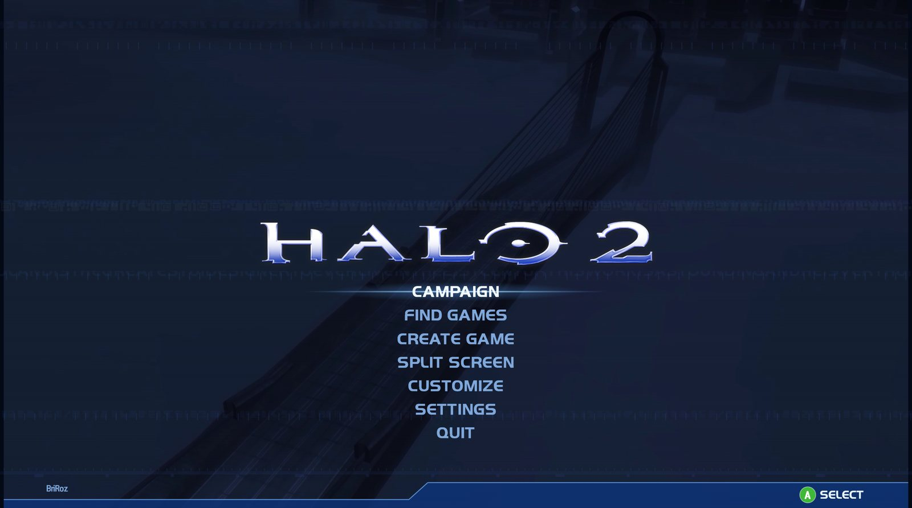

Halo 2 · The Master Chief Collection · PC
PROJECT
GRAVEMIND
The Halo 2 you already own in The Master Chief Collection, running as a PC game of its own. With matchmaking and the original ranks, dedicated servers, 24-player matches and online co-op for up to 16.El Halo 2 que ya tienes en The Master Chief Collection, funcionando como un juego de PC independiente. Con matchmaking y los rangos originales, servidores dedicados, partidas de 24 jugadores y cooperativo en línea para hasta 16.
Requires Halo: The Master Chief Collection on Steam, with Halo 2 installed. Windows 10 or 11.Necesitas Halo: The Master Chief Collection en Steam, con Halo 2 instalado. Windows 10 u 11.
What it isQué es
Your Halo 2, on its ownTu Halo 2, por su cuenta
Project Gravemind is a free launcher that opens Halo 2 straight from your Steam copy of The Master Chief Collection. It doesn't install anything and never changes a file of MCC: the game is read from where Steam put it, and your settings live in a folder of their own.Project Gravemind es un lanzador gratuito que abre Halo 2 directamente desde tu copia de The Master Chief Collection en Steam. No instala nada y no modifica ni un archivo de MCC: el juego se lee desde donde lo dejó Steam y tus ajustes se guardan en su propia carpeta.
Around the game, it brings together what Halo 2 on PC never had in one place: its own matchmaking with the original ranks, dedicated servers, bigger matches and a co-op campaign you can play online. The same idea as Project Reclaimer, built for Halo 2.Alrededor del juego reúne lo que Halo 2 en PC nunca tuvo en un mismo sitio: matchmaking propio con los rangos originales, servidores dedicados, partidas más grandes y una campaña cooperativa que se juega en línea. La misma idea que Project Reclaimer, hecha para Halo 2.
- Runs the copy of Halo 2 you already own
- The download contains no game files
- Updates itself from GitHub when a new version is out
- Usa la copia de Halo 2 que ya tienes
- La descarga no contiene archivos del juego
- Se actualiza solo desde GitHub cuando sale una versión nueva

OnlineEn línea
Built for playing togetherHecho para jugar en compañía
Halo 2 was at its best online. These are the pieces that bring that back.Halo 2 brillaba en línea. Estas son las piezas que lo devuelven.
GRAVEMIND LIVEGRAVEMIND LIVE
Matchmaking playlists, parties and a friends list, modelled on Halo 2's Xbox Live. Ranked and casual.Listas de matchmaking, grupos y lista de amigos, a imagen del Xbox Live de Halo 2. Competitivas y casuales.
Dedicated serversServidores dedicados
Always-on servers in FIND GAMES. Players vote for the next map in the lobby.Servidores siempre encendidos en BUSCAR PARTIDAS. Los jugadores votan el siguiente mapa en la sala.
24-player matchesPartidas de 24
Eight more than Halo 2 allowed, with everyone's medals and stats in the results.Ocho más de los que permitía Halo 2, con las medallas y estadísticas de todos en los resultados.
Co-op for 16, with skullsCooperativo para 16, con calaveras
The whole campaign online with up to 16 players, and MCC's 34 Halo 2 skulls.Toda la campaña en línea con hasta 16 jugadores, y las 34 calaveras de Halo 2 de MCC.
Voice and text chatChat de voz y de texto
Push to talk to everyone or only your team, and a text chat in the lobby and the match.Pulsa para hablar con todos o solo con tu equipo, y chat de texto en la sala y en la partida.
Steam WorkshopSteam Workshop
Halo 2 maps and campaign mods. Join a game on a mod you don't have and it downloads on its own.Mapas y mods de campaña de Halo 2. Si entras a una partida con un mod que no tienes, se descarga solo.
Getting startedCómo empezar
Three steps, no installerTres pasos, sin instalador
- DownloadGet the latest version from GitHub. It's a zip file.DescargaBaja la última versión desde GitHub. Es un archivo zip.
- Unzip and openPut it in any folder and run
h2gravemind.exe. It finds MCC by itself.Descomprime y abrePonlo en cualquier carpeta y ejecutah2gravemind.exe. Encuentra MCC por su cuenta. - PlayChoose your name and look in CUSTOMIZE, then head to GRAVEMIND LIVE or FIND GAMES.JuegaElige tu nombre y tu aspecto en PERSONALIZAR y entra en GRAVEMIND LIVE o BUSCAR PARTIDAS.
ScreenshotsCapturas
A look insideUn vistazo por dentro
It's an open beta, and it's freeEs una beta abierta, y es gratis
Things will break now and then. When they do, tell us on Discord: player reports are how the beta gets better.De vez en cuando algo fallará. Cuando pase, cuéntanoslo en Discord: los avisos de los jugadores son lo que hace mejorar la beta.